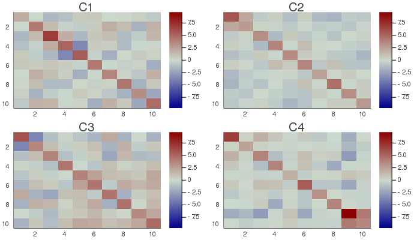
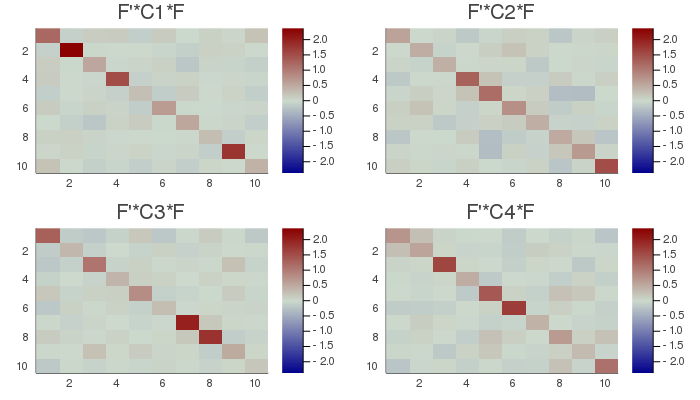

AJD
Approximate Joint Diagonalization (AJD) is a diagonalization prodedure generalizing the eigenvalue-eigenvector decomposition to more then two matrices. This corresponds to the situation $m=1$ (one dataset) and $k>2$ (number of observations). As such, is a very general procedure with a myriad of potential applications. It was first proposed by Flury and Gautschi (1986) in statistics and by Cardoso and Souloumiac(1996) in signal processing 🎓. Since, it has become a fundamental tool for solving the blind source separation(BSS) problem.
Let ${C_1,...,C_k}$ be a set of $n⋅n$ symmetric or Hermitian matrices. In BSS typically those are covariance matrices, Fourier cross-spectral matrices, lagged covariance matrices or slices of 4th order cumulants, where $n$ is the number of variables.
An AJD algorithm seeks a matrix $F$ diagonalizing all matrices in the set as much as possible, according to some diagonalization criterion, that is, we want to achieve
$F^HC_lF≈Λ_l$, for all $l∈[1...k]$. $\hspace{1cm}$ [ajd.1]
In some algorithm, such as OJoB, $F$ is constrained to be orthogonal, in others, like NoJoB only to be non-singular.
pre-whitening for AJD
Similarly to the two-step procedures encountered in other filters, e.g., for the CCA, for solving the AJD problem often pre-whitening is applied: first a whitening matrix $W$ if found such that
$W^H\Big(\frac{1}{k}\sum_{l=1}^kC_k\Big)W_k=I$, $\hspace{1cm}$ [ajd.2]
then the following transformed AJD problem if solved for $U$:
$U^H(W^HC_lW)U≈Λ_l$, for all $l∈[1...k]$.
Finally, $F$ is obtained as
$F=WU$. $\hspace{1cm}$ [ajd.3]
Notice that:
- matrix $W$ may be taken rectangular so as to engender a dimensionality reduction at this stage. This may improve the convergence behavior of AJD algorithms if the matrices ${C_1,...,C_k}$ are not well-conditioned.
- if this two-step procedure is employed, the final solution $F$ is never orthogonal, even if the solving AJD algorithm constrains the solution within the orthogonal group.
permutation for AJD
Approximate joint diagonalizers are arbitrary up to a scale and permutation. Diagonalizations.jl attempts to solve the permutation ambiguity by reordering the columns of $F$ so as to sort in descending order the diagonal elements of
$\frac{1}{k}\sum_{l=1}^kF^HC_kF$. $\hspace{1cm}$ [ajd.4]
This sorting mimics the sorting of exact diagonalization procedures such as the PCA, of which the AJD is a generalization, however it is meaningful only if the input matrices ${C_1,...,C_k}$ are positive definite.
In analogy with PCA, let
$λ=[λ_1...λ_n]$ $\hspace{1cm}$ [ajd.5]
be the diagonal elements of [ajd.4] and let
$σ_{TOT}=\sum_{i=1}^nλ_i$ be the total variance.
We denote $\widetilde{F}=[f_1 \ldots f_p]$ the matrix holding the first $p<n$ column vectors of $F$, where $p$ is the subspace dimension. The explained variance is given by
$σ_p=\frac{\sum_{i=1}^pλ_i}{σ_{TOT}}$ $\hspace{1cm}$ [ajd.6]
and the accumulated regularized eigenvalues (arev) by
$σ_j=\sum_{i=1}^j{σ_i}$, for $j=[1 \ldots n]$. $\hspace{1cm}$ [ajd.7]
For setting the subspace dimension $p$ manually, set the eVar optional keyword argument of the MCA constructors either to an integer or to a real number, this latter establishing $p$ in conjunction with argument eVarMeth using the arev vector (see subspace dimension). By default, eVar is set to 0.999.
Solution
There is no closed-form solution to the AJD problem in general. See Algorithms.
Constructors
Two constructors are available (see here below). The constructed LinearFilter object holding the AJD will have fields:
.F: matrix $\widetilde{F}$ with columns holding the first $p$ eigenvectors in $F$, or just $F$ if $p=n$
.iF: the left-inverse of .F
.D: the leading $p⋅p$ block of $Λ$, i.e., the elements [ajd.5] associated to .F in diagonal form.
.eVar: the explained variance [ajd.6] for the chosen value of $p$.
.ev: the vector $λ$ [ajd.5].
.arev: the accumulated regularized eigenvalues, defined in [ajd.7].
Diagonalizations.ajd — Function(1)
function ajd(𝐂::ℍVector;
trace1 :: Bool = false,
w :: Union{Tw, Function} = ○,
algorithm :: Symbol = :NoJoB,
preWhite :: Bool = false,
sort :: Bool = true,
init :: Mato = ○,
tol :: Real = 1e-6,
maxiter :: Int = _maxiter(algorithm, eltype(𝐂[1])),
verbose :: Bool = false,
threaded :: Bool = true,
eVar :: TeVaro = _minDim(𝐂),
eVarC :: TeVaro = ○,
eVarMeth :: Function = searchsortedfirst,
simple :: Bool = false)
(2)
function ajd(𝐗::VecMat;
covEst :: StatsBase.CovarianceEstimator = SCM,
dims :: Into = ○,
meanX :: Into = 0,
trace1 :: Bool = false,
w :: Twf = ○,
algorithm :: Symbol = :NoJoB,
preWhite :: Bool = false,
sort :: Bool = true,
init :: Mato = ○,
tol :: Real = 1e-6,
maxiter :: Int = _maxiter(algorithm, eltype(𝐗[1])),
verbose :: Bool = false,
threaded :: Bool = true,
eVar :: TeVaro = _minDim(𝐗),
eVarC :: TeVaro = ○,
eVarMeth :: Function = searchsortedfirst,
simple :: Bool = false)
Return a LinearFilter object:
(1) Approximate joint diagonalization of the set of $k$ symmetric or Hermitian matrices 𝐂, of type ℍVector using the given solving algorithm (NoJoB by default).
If trace1 is true, all matrices in the set 𝐂 are normalized so as to have trace equal to 1. It is false by default. This option applies only for solving algorithms that are not invariante by scaling, that is, those based on the least-squares (Frebenius) criterion. See Algorithms.
if w is a StatsBase.AbstractWeights, the weights are applied to the set 𝐂. If w is a Function, the weights are found passing each matrix in the set to such function. An appropriate choice for AJD algorithms minimizing a least-squares criterion, like OJoB and NoJoB, is the nonDiagonality function (Congedo et al.(2008)🎓). By default, no weights are applied.
If preWhite is true the solution is found by the two-step procedure described here above in section pre-whitening for AJD. By default, it is false. Dimensionality reduction can be obtained at this stage using arguments eVarC and eVarMeth, in the same way they are used to find the subspace dimension $p$, but using the accumulated regularized eigenvalues of
$\frac{1}{k}\sum_{l=1}^kC_k$.
The default values are:
eVarCis set to 0.999eVarMeth=searchsortedfirst.
If sort is true (default), the vectors in .F are permuted as explained here above in permutation for AJD, otherwise they will be in arbitrary order.
Regarding arguments init, tol and maxiter, see Algorithms.
If verbose is true (false by default), the convergence attained at each iteration will be printed in the REPL.
eVar and eVarMeth are used to define a subspace dimension $p$ using the accumulated regularized eigenvalues in Eq. [ajd.7].
The default values are:
eVaris set to the dimension of the matrices in𝐂eVarMeth=searchsortedfirst.
Note that passing nothing or a real nummber as eVar (see subspace dimension) is meningful only if sort is set to true (default) and if the input matrices ${C_1,...,C_k}$ are positive definite.
If simple is set to true, $p$ is set equal to the dimension of the matrices ${C_1,...,C_k}$ and only the fields .F and .iF are written in the constructed object. This corresponds to the typical output of AJD algorithms.
if threaded=true (default) and the number of threads Julia is instructed to use (the output of Threads.nthreads()), is higher than 1, AJD algorithms supporting multi-threading run in multi-threaded mode. See Algorithms and these notes on multi-threading.
(2) Approximate joint diagonalization with a set of $k$ data matrices 𝐗 as input; the covariance matrices of the set are estimated using arguments covEst, dims and meanX (see covariance matrix estimations) and passed to method (1) with the remaining arguments of method (2).
Examples:
using Diagonalizations, LinearAlgebra, PosDefManifold, Test
const err=1e-6
# method (1) real
t, n, k=50, 10, 10
A=randn(n, n) # mixing matrix in model x=As
Xset = [genDataMatrix(t, n) for i = 1:k]
Xfixed=randn(t, n)./1
for i=1:length(Xset) Xset[i]+=Xfixed end
Cset = ℍVector([ℍ((Xset[s]'*Xset[s])/t) for s=1:k])
aC=ajd(Cset; algorithm=:OJoB, simple=true)
aC2=ajd(Cset; algorithm=:NoJoB, simple=true)
aC3=ajd(Cset; algorithm=:LogLike, simple=true)
aC4=ajd(Cset; algorithm=:LogLikeR, simple=true)
aC5=ajd(Cset; algorithm=:JADE, simple=true)
aC6=ajd(Cset; algorithm=:JADEmax, simple=true)
aC7=ajd(Cset; algorithm=:GAJD, simple=true)
aC8=ajd(Cset; algorithm=:QNLogLike, simple=true)
# a=ajd(Cset; algorithm=:GAJD2, simple=true, verbose=true)
# method (2) real
aX=ajd(Xset; algorithm=:OJoB, simple=true)
aX2=ajd(Xset; algorithm=:NoJoB, simple=true)
aX3=ajd(Xset; algorithm=:LogLike, simple=true)
aX4=ajd(Xset; algorithm=:LogLikeR, simple=true)
aX5=ajd(Xset; algorithm=:JADE, simple=true)
aX6=ajd(Xset; algorithm=:JADEmax, simple=true)
aX7=ajd(Xset; algorithm=:GAJD, simple=true)
aX8=ajd(Xset; algorithm=:QNLogLike, simple=true)
@test aX≈aC
@test aX2≈aC2
@test aX3≈aC3
@test aX4≈aC4
@test aX5≈aC5
@test aX6≈aC6
@test aX7≈aC7
@test aX8≈aC8
# method (1) complex
t, n, k=50, 10, 10
Ac=randn(ComplexF64, n, n) # mixing matrix in model x=As
Xcset = [genDataMatrix(ComplexF64, t, n) for i = 1:k]
Xcfixed=randn(ComplexF64, t, n)./1
for i=1:length(Xcset) Xcset[i]+=Xcfixed end
Ccset = ℍVector([ℍ((Xcset[s]'*Xcset[s])/t) for s=1:k])
aCc=ajd(Ccset; algorithm=:OJoB, simple=true)
aCc2=ajd(Ccset; algorithm=:NoJoB, simple=true)
aCc3=ajd(Ccset; algorithm=:LogLike, simple=true)
aCc4=ajd(Ccset; algorithm=:JADE, simple=true)
aCc5=ajd(Ccset; algorithm=:JADEmax, simple=true)
# method (2) complex
aXc=ajd(Xcset; algorithm=:OJoB, simple=true)
aXc2=ajd(Xcset; algorithm=:NoJoB, simple=true)
aXc3=ajd(Xcset; algorithm=:LogLike, simple=true)
aXc4=ajd(Xcset; algorithm=:JADE, simple=true)
aXc5=ajd(Xcset; algorithm=:JADEmax, simple=true)
@test aXc≈aCc
@test aXc2≈aCc2
@test aXc3≈aCc3
@test aXc4≈aCc4
@test aXc5≈aCc5
# create 20 REAL random commuting matrices
# they all have the same eigenvectors
Cset2=PosDefManifold.randP(3, 20; eigvalsSNR=Inf, commuting=true)
# estimate the approximate joint diagonalizer (AJD)
a=ajd(Cset2; algorithm=:OJoB)
# the orthogonal AJD must be equivalent to the eigenvector matrix
# of any of the matrices in Cset
@test norm([spForm(a.F'*eigvecs(C)) for C ∈ Cset2])/20 < err
# do the same for JADE algorithm
a=ajd(Cset2; algorithm=:JADE)
@test norm([spForm(a.F'*eigvecs(C)) for C ∈ Cset2])/20 < err
# do the same for JADEmax algorithm
a=ajd(Cset2; algorithm=:JADEmax)
@test norm([spForm(a.F'*eigvecs(C)) for C ∈ Cset2])/20 < err
# generate positive definite matrices with model A*D_κ*D, where
# A is the mixing matrix and D_κ, for all κ=1:k, are diagonal matrices.
# The estimated AJD matrix must be the inverse of A
# and all transformed matrices bust be diagonal
n, k=3, 10
Dest=PosDefManifold.randΛ(eigvalsSNR=10, n, k)
# make the problem identifiable
for i=1:k Dest[k][1, 1]*=i/(k/2) end
for i=1:k Dest[k][3, 3]/=i/(k/2) end
A=randn(n, n) # non-singular mixing matrix
Cset3=Vector{Hermitian}([Hermitian(A*D*A') for D ∈ Dest])
a=ajd(Cset3; algorithm=:NoJoB, eVarC=n)
@test spForm(a.F'*A)<√err
@test mean(nonD(a.F'*Cset3[i]*a.F) for i=1:k)<err
a=ajd(Cset3; algorithm=:LogLike, eVarC=n)
@test spForm(a.F'*A)<√err
@test mean(nonD(a.F'*Cset3[i]*a.F) for i=1:k)<err
a=ajd(Cset3; algorithm=:LogLikeR, eVarC=n)
@test spForm(a.F'*A)<√err
@test mean(nonD(a.F'*Cset3[i]*a.F) for i=1:k)<err
a=ajd(Cset3; algorithm=:GAJD, eVarC=n)
@test spForm(a.F'*A)<√err
@test mean(nonD(a.F'*Cset3[i]*a.F) for i=1:k)<err
a=ajd(Cset3; algorithm=:QNLogLike, eVarC=n)
@test spForm(a.F'*A)<√err
@test mean(nonD(a.F'*Cset3[i]*a.F) for i=1:k)<err
# Do the same thing for orthogonal diagonalizers:
# now A will be orthogonal
O=randU(n) # orthogonal mixing matrix
Cset4=Vector{Hermitian}([Hermitian(O*D*O') for D ∈ Dest])
a=ajd(Cset4; algorithm=:OJoB, eVarC=n)
@test spForm(a.F'*O)<√err
@test mean(nonD(a.F'*Cset4[i]*a.F) for i=1:k)<err
a=ajd(Cset4; algorithm=:JADE, eVarC=n)
@test spForm(a.F'*O)<√err
@test mean(nonD(a.F'*Cset4[i]*a.F) for i=1:k)<√err
a=ajd(Cset4; algorithm=:JADEmax, eVarC=n)
@test spForm(a.F'*O)<√err
@test mean(nonD(a.F'*Cset4[i]*a.F) for i=1:k)<√err
# repeat the test adding noise; now the model is no more exactly identifiable
for k=1:length(Cset3) Cset3[k]+=randP(n)/1000 end
a=ajd(Cset3; algorithm=:NoJoB, eVarC=n)
@test spForm(a.F'*A)<err^(1/6)
@test mean(nonD(a.F'*Cset3[i]*a.F) for i=1:k)<√err
a=ajd(Cset3; algorithm=:LogLike, eVarC=n)
@test spForm(a.F'*A)<err^(1/6)
@test mean(nonD(a.F'*Cset3[i]*a.F) for i=1:k)<√err
a=ajd(Cset3; algorithm=:LogLikeR, eVarC=n)
@test spForm(a.F'*A)<err^(1/6)
@test mean(nonD(a.F'*Cset3[i]*a.F) for i=1:k)<√err
a=ajd(Cset3; algorithm=:GAJD, eVarC=n)
@test spForm(a.F'*A)<err^(1/6)
@test mean(nonD(a.F'*Cset3[i]*a.F) for i=1:k)<√err
a=ajd(Cset3; algorithm=:QNLogLike, eVarC=n)
@test spForm(a.F'*A)<err^(1/6)
@test mean(nonD(a.F'*Cset3[i]*a.F) for i=1:k)<√err
# the same thing for orthogonal diagonalizers
for k=1:length(Cset4) Cset4[k]+=randP(n)/1000 end
a=ajd(Cset4; algorithm=:OJoB, eVarC=n)
@test spForm(a.F'*O)<err^(1/6)
@test mean(nonD(a.F'*Cset4[i]*a.F) for i=1:k)<√err
a=ajd(Cset4; algorithm=:JADE, eVarC=n)
@test spForm(a.F'*O)<err^(1/6)
@test mean(nonD(a.F'*Cset4[i]*a.F) for i=1:k)<√err
a=ajd(Cset4; algorithm=:JADEmax, eVarC=n)
@test spForm(a.F'*O)<err^(1/6)
@test mean(nonD(a.F'*Cset4[i]*a.F) for i=1:k)<√err
# create 20 COMPLEX random commuting matrices
# they all have the same eigenvectors
Ccset2=PosDefManifold.randP(ComplexF64, 3, 20; eigvalsSNR=Inf, commuting=true)
# estimate the approximate joint diagonalizer (AJD)
ac=ajd(Ccset2; algorithm=:OJoB)
# he AJD must be equivalent to the eigenvector matrix of any of the matrices in Cset
# just a sanity check as rounding errors appears for complex data
@test norm([spForm(ac.F'*eigvecs(C)) for C ∈ Ccset2])/20<√err
# do the same for JADE algorithm
ac=ajd(Ccset2; algorithm=:JADE)
@test norm([spForm(ac.F'*eigvecs(C)) for C ∈ Ccset2])/20<√err
# do the same for JADEmax algorithm
ac=ajd(Ccset2; algorithm=:JADEmax)
@test norm([spForm(ac.F'*eigvecs(C)) for C ∈ Ccset2])/3<√err
# the same thing using the NoJoB and LogLike algorithms. Require less precision
# as the NoJoB solution is not constrained in the orthogonal group
ac=ajd(Ccset2; algorithm=:NoJoB)
@test norm([spForm(ac.F'*eigvecs(C)) for C ∈ Ccset2])/20<√err
ac=ajd(Ccset2; algorithm=:LogLike)
@test norm([spForm(ac.F'*eigvecs(C)) for C ∈ Ccset2])/20<√err
# REAL data:
# normalize the trace of input matrices,
# give them weights according to the `nonDiagonality` function
# apply pre-whitening and limit the explained variance both
# at the pre-whitening level and at the level of final vector selection
Cset=PosDefManifold.randP(20, 80; eigvalsSNR=10, SNR=10, commuting=false)
a=ajd(Cset; algorithm=:OJoB, trace1=true, w=nonD, preWhite=true, eVarC=4, eVar=0.99)
a=ajd(Cset; algorithm=:NoJoB, trace1=true, w=nonD, preWhite=true, eVarC=4, eVar=0.99)
a=ajd(Cset; algorithm=:LogLike, w=nonD, preWhite=true, eVarC=4, eVar=0.99)
a=ajd(Cset; algorithm=:LogLikeR, w=nonD, preWhite=true, eVarC=4, eVar=0.99)
a=ajd(Cset; algorithm=:JADE, w=nonD, preWhite=true, eVarC=4, eVar=0.99)
a=ajd(Cset; algorithm=:JADEmax, w=nonD, preWhite=true, eVarC=4, eVar=0.99)
a=ajd(Cset; algorithm=:GAJD, w=nonD, preWhite=true, eVarC=4, eVar=0.99)
a=ajd(Cset; algorithm=:QNLogLike, w=nonD, preWhite=true, eVarC=4, eVar=0.99)
# AJD for plots below
a=ajd(Cset; algorithm=:QNLogLike, verbose=true, preWhite=true)
using Plots
# plot the original covariance matrices
# and their transformed counterpart
CMax=maximum(maximum(abs.(C)) for C ∈ Cset);
h1 = heatmap(Cset[1], clim=(-CMax, CMax), title="C1", yflip=true, c=:bluesreds);
h2 = heatmap(Cset[2], clim=(-CMax, CMax), title="C2", yflip=true, c=:bluesreds);
h3 = heatmap(Cset[3], clim=(-CMax, CMax), title="C3", yflip=true, c=:bluesreds);
h4 = heatmap(Cset[4], clim=(-CMax, CMax), title="C4", yflip=true, c=:bluesreds);
📈=plot(h1, h2, h3, h4, size=(700,400))
# savefig(📈, homedir()*"\Documents\Code\julia\Diagonalizations\docs\src\assets\FigAJD1.png")
Dset=[a.F'*C*a.F for C ∈ Cset];
DMax=maximum(maximum(abs.(D)) for D ∈ Dset);
h5 = heatmap(Dset[1], clim=(-DMax, DMax), title="F'*C1*F", yflip=true, c=:bluesreds);
h6 = heatmap(Dset[2], clim=(-DMax, DMax), title="F'*C2*F", yflip=true, c=:bluesreds);
h7 = heatmap(Dset[3], clim=(-DMax, DMax), title="F'*C3*F", yflip=true, c=:bluesreds);
h8 = heatmap(Dset[4], clim=(-DMax, DMax), title="F'*C4*F", yflip=true, c=:bluesreds);
📉=plot(h5, h6, h7, h8, size=(700,400))
# savefig(📉, homedir()*"\Documents\Code\julia\Diagonalizations\docs\src\assets\FigAJD2.png")


# COMPLEX data:
# normalize the trace of input matrices,
# give them weights according to the `nonDiagonality` function
# apply pre-whitening and limit the explained variance both
# at the pre-whitening level and at the level of final vector selection
Ccset=PosDefManifold.randP(3, 20; eigvalsSNR=10, SNR=2, commuting=false)
ac=ajd(Ccset; trace1=true, w=nonD, preWhite=true,
algorithm=:OJoB, eVarC=8, eVar=0.99)
ac=ajd(Ccset; eVarC=8, eVar=0.99)
ac=ajd(Ccset; algorithm=:LogLike, eVarC=8, eVar=0.99)
ac=ajd(Ccset; algorithm=:JADE, eVarC=8, eVar=0.99)
ac=ajd(Ccset; algorithm=:JADEmax, eVarC=8, eVar=0.99)